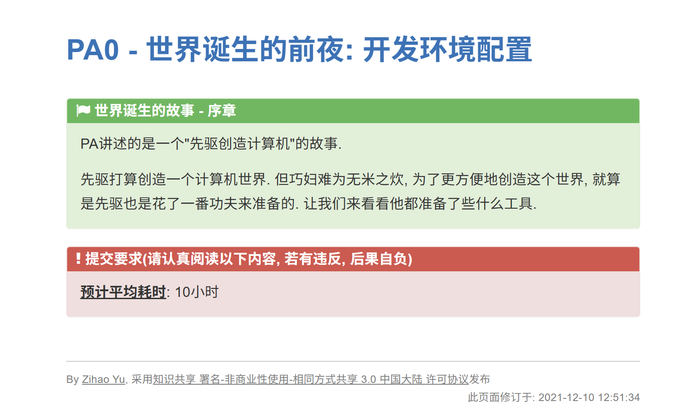
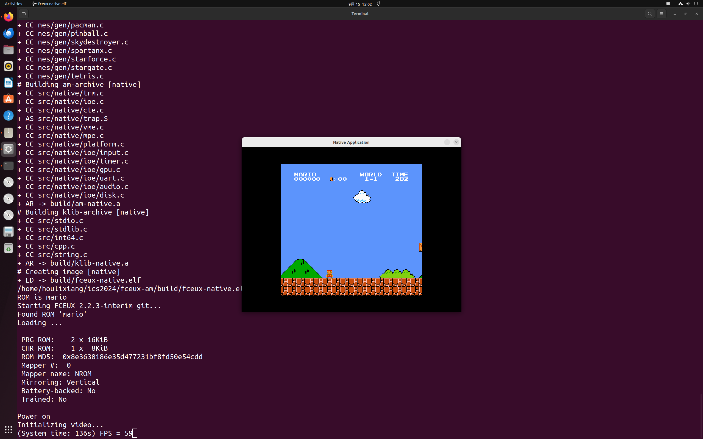

PA0实验记录
日期：2025-09-16
关于PA
PA（Program Assignment）是南京大学开设的一门计算机系统基础的实验课。我是在刷知乎的时候听说了这门神课，网友对PA赞不绝口，更有在校生说这是在南京大学体验最好的一门课。出于好奇，也为了提高自己编码的能力，我在大三上开始入手学习。
PA的配套资源齐全丰富。余子濠博士为这门课撰写了具体的实验文档。在b站上有蒋炎岩和王慧妍两位老师的录播视频，慕课也有袁春风老师的计算机系统理论课视频。可以说，万事俱备，只差自己的努力了。
PA0有什么
在技术上讲，PA0只做了一件事情：环境配置
“配置环境会磨灭90%的兴趣。”经过大一大二两个学期的学习，我对这句话深以为然。谁在入门的时候没有被配置Python环境所折磨过呢？环境的配置是任何工作的第一步，但不幸的是，很多人在第一步就倒下了。我想也正是因为如此，PA的第0个实验并没有做别的，仅仅是完成了Linux操作系统及其配套工具链的入门。
跟随教程，不断地RTFM（Read The Fuck Manual）& STFW（Search The Fuck Web），我成功在虚拟机上安装了Ubuntu，对Git、MakeFile、GBD，Vim（宇宙第一编辑器）等工具有了初步的了解。这些工具以前也并不是从没用过，但当时本着一种“能跑就行”的态度，从未去阅读过这些工具的入门教程和说明文档。
然而，PA0不仅仅是一门计算机的技术性的课程，更是一位谆谆教诲的老师，为计算机科学的学习提供了一整套可供借鉴的方法论。他教会学生搜索的技巧、提问的艺术、面对困难时应有的态度以及更好提升自己的手段，而这些内容正是我现在最需要的，我想也应该是每一位计算机类的学生所最需要的。
我的完成情况
实验文档里的预计用时写的是10小时。我自己大概用了一整周（太怠惰了属于是）。
我并没有遇到很多困难，可能是因为之前接触过一点相关知识。幸好我没有在PA0就倒下！
在Ubuntu上成功运行超级马里奥的那一刻，心情还是很激动的啊！
